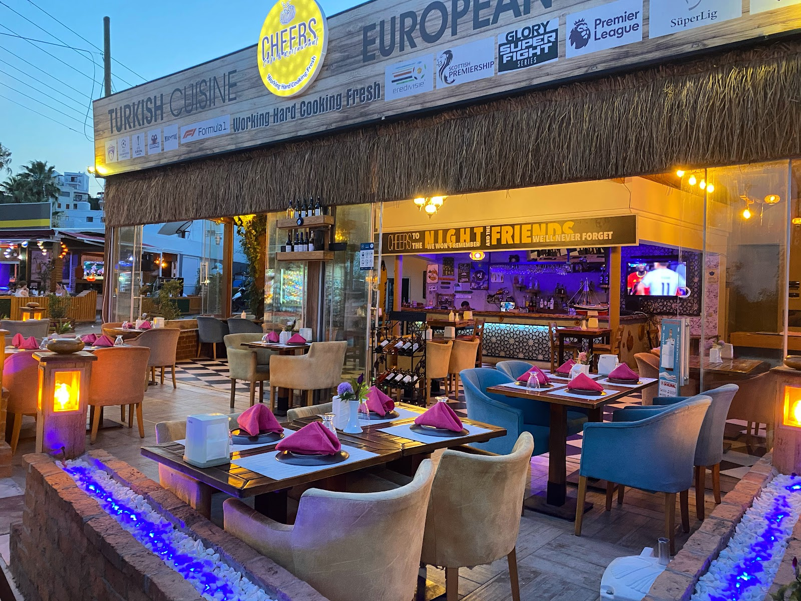
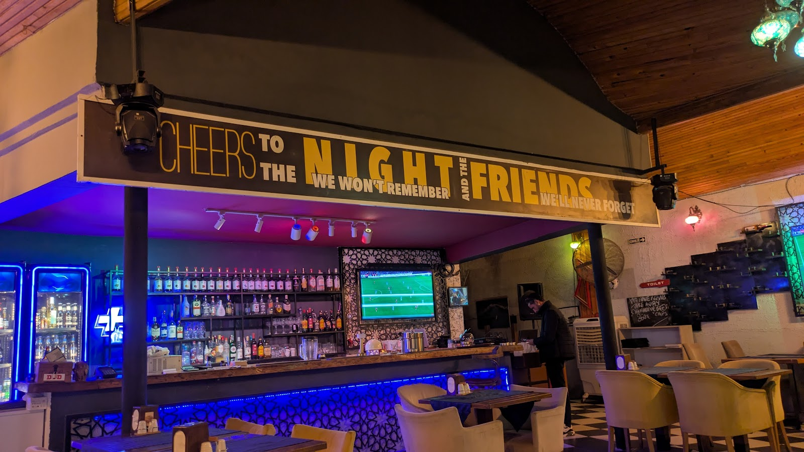
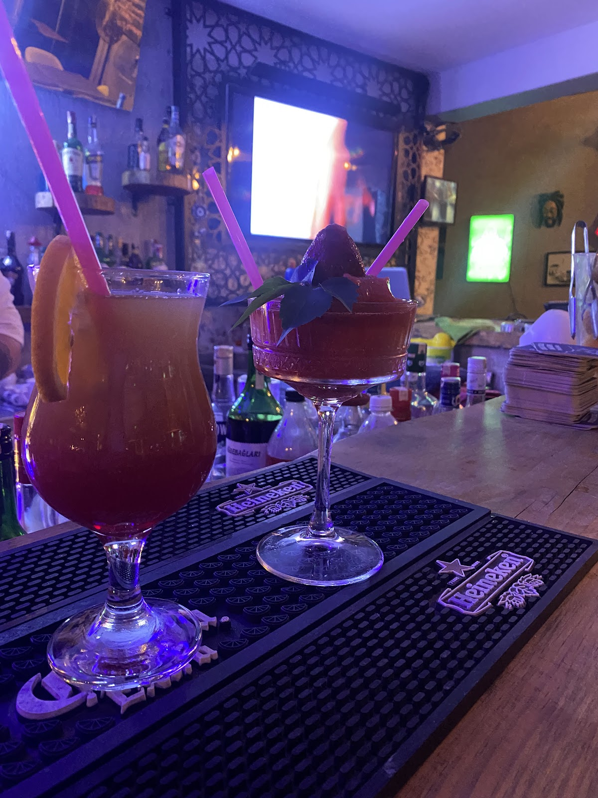
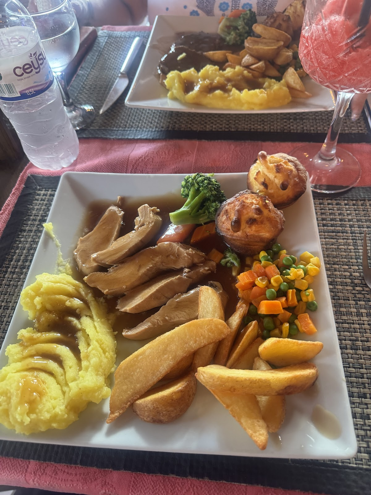
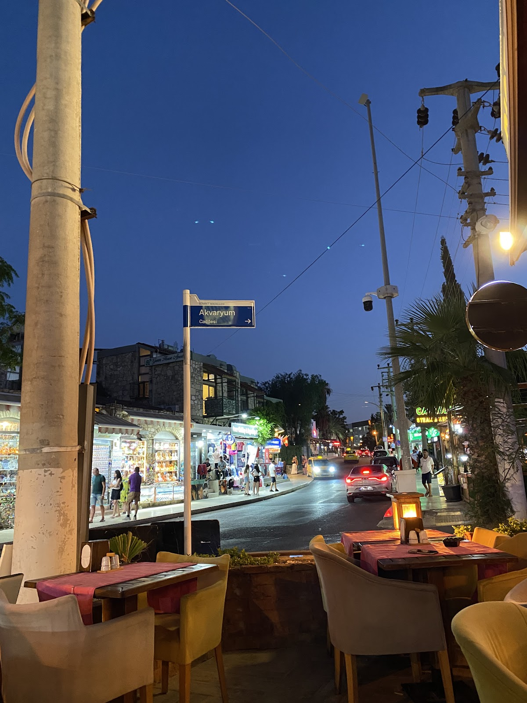
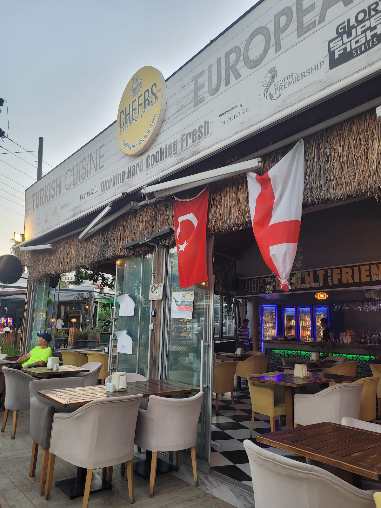

— I.
Akşam Yemeği
Şefin akdeniz mutfağı; ızgara ahtapot, levrek carpaccio ve mevsim sebzeleri ile.
- Ahtapot ızgara, kişniş yağı
- Levrek carpaccio, pembe biber
- Akdeniz mezeleri tabağı
- Şefin günlük menüsü
Gümbet · Bodrum · Kokteyl ve Geç Saatler
Gumbet'in tam ortasında, gün batımıyla açılan ve gece yarısını geçen bir bar-restoran. Akşam yemeği, imza kokteyller ve hafta sonu karaoke geceleri.

Gumbet · Adnan Menderes Cd.
Erken akşamdan gece yarısına — masa, bar ve karaoke sahnesi sırayla devreye giriyor.
Şefin akdeniz mutfağı; ızgara ahtapot, levrek carpaccio ve mevsim sebzeleri ile.
Bodrum'un en uzun bar kartlarından biri — imza kokteyller, klasikler, mocktail seçenekleri.
Perşembe'den Pazar'a, gece 23:00 sonrası canlı karaoke. Mikrofon sizde — sahne hazır.
Her akşam kabaca bu ritmi izler — masanız hangi saate denk gelirse o pencerenin tadını çıkarın.
Kapılar açılır, bar hazır. Aperitif saatleri.
Şefin menüsü, uzun masalar dolmaya başlar.
Yemek biter, bar dolar. Imza kokteyller akar.
Mikrofon açılır, sahne misafirlerin.
Son kadehler, son şarkılar. Kapanış.
Cheers, 2018'de Adnan Menderes Caddesi'nin tam ortasında, eski bir taş binanın yenilenmesiyle açıldı. Şef Cem Aksoy'un akdeniz mutfağı ile barmen Deniz Yıldız'ın imza kokteylleri burada buluşuyor.
Yazlık Bodrum'a gelen yabancı misafirler ve Türk hafta sonu kaçamakçıları, aynı bardan içiyor. Servis ekibimiz Türkçe ve İngilizce; menü iki dilli.
Bardan sokağa, kokteylden Sunday roast'a — Cheers'ın akşamı.





"Gumbet'te akşam yemeği yiyip bara kadar kalabileceğin nadir mekanlardan. Servis ekibinin İngilizce'si harika."
"Gumbet Sunset kokteyli efsane. Cuma akşamı karaoke gecesi için tekrar geleceğiz, masa ayırtmayı unutmayın."
"From the food to the music — a real Mediterranean evening. Felt like Mykonos but with better service."
Hafta sonları erken doluyoruz. WhatsApp üzerinden mesaj atın, masa türü ve saat birlikte bakalım.